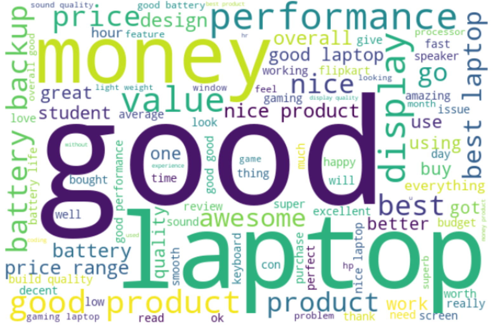
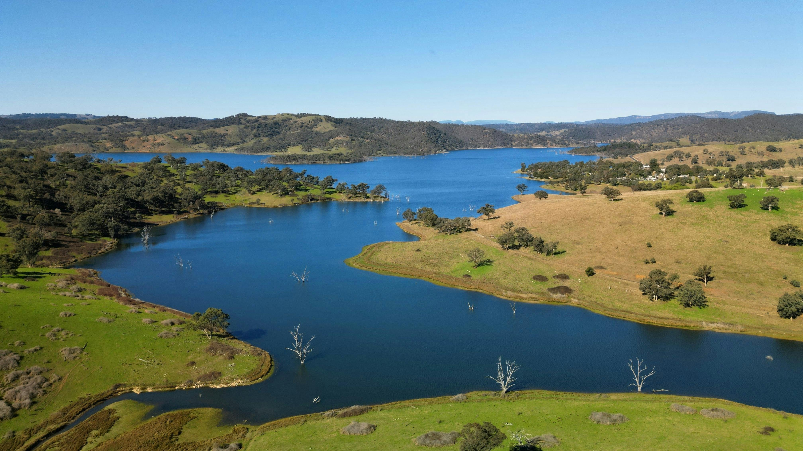

Developed an end-to-end business intelligence dashboard providing a 360° view of organisational performance across Finance, Sales, Marketing, and Supply Chain.
Designed KPIs such as Net Sales, Gross Margin %, Net Profit %, and Forecast Accuracy to support strategic decision-making and uncover actionable insights across business functions.
Power BI · DAX · Data Modelling · Business Intelligence · Data Analysis
Built an NLP pipeline on 18k+ Reddit posts to detect mental-health risk levels (low/medium/high). Fine-tuned DistilBERT with advanced optimisation techniques to improve macro-F1 and minority-class recall, with a focus on ethical handling, reproducibility, and deployment readiness.
Python · PyTorch · Transformers · NLP · Machine Learning
Analysed 16k+ Colchester crime records alongside local weather data to reveal seasonal and spatial trends.
Built interactive dashboards and animated visualisations in R (ggplot2, plotly, leaflet) to uncover hotspots
and highlight weak-to-moderate associations between weather factors and crime categories.
R · Data Visualisation · Time Series · Spatial Analysis · Interactive Dashboards
Predicted short-horizon stock returns using engineered indicators (MA, RSI, volatility) and models including
SVM, Random Forest, and Neural Networks. Evaluated with regression and strategy metrics (MSE, Sharpe, drawdown)
using walk-forward validation to ensure realistic performance.
Python · Machine Learning · Time Series Forecasting · Finance · Predictive Modelling

Applied unsupervised NLP on consumer laptop reviews to extract themes such as battery life, performance, and value for money.
Compared LDA with BERTopic for topic coherence and interpretability, then built visualisations (heatmaps, sentiment by topic) to reveal brand-specific strengths and weaknesses.
Python · NLP · Topic Modelling · BERTopic · LDA
Constructed efficient frontiers using CAPM-based expected returns and compared allocation strategies including
mean–variance, risk-parity, and equal-weight benchmarks. Backtested portfolios with rolling windows to evaluate
Sharpe ratios, drawdowns, and stability, highlighting the trade-offs between risk and return.
Python · Quantitative Finance · Optimisation · Risk Analysis · Data Science

Modelled biodiversity variation using ecological variables such as climate, elevation, and land cover.
Applied regression and regularisation with cross-validation to identify key environmental drivers while
ensuring robust generalisation. Demonstrated the adaptability of data science methods to sustainability
and ecological research domains.
R · Regression · Cross-validation · Environmental Data · Statistical Modelling
I am a Data Analyst with over 3 years of professional experience at Infosys, where I worked on KPI reporting, automation, and business intelligence solutions for global clients. My work focused on transforming raw data into meaningful insights, building dashboards, and supporting data-driven decision-making across business functions.
I recently completed my MSc in Data Science (University of Essex, UK), where I developed strong skills in data analytics, machine learning, and data visualisation. My projects combine technical expertise with real-world business applications, including Power BI dashboards and NLP-based analytics solutions.
I specialise in using SQL, Python, and Power BI to analyse data, build scalable data models, and create interactive dashboards. I am particularly interested in solving business problems through data and delivering insights that improve performance and efficiency.
I am currently based in the United Kingdom and actively seeking Data Analyst and BI roles where I can help organisations turn data into actionable business insights.
Tech Stack: SQL · Python · Power BI (DAX, Power Query) · Excel · Tableau · Data Modelling · Data Analysis · Machine Learning · Azure · Git
Contributing to a global AI innovation project focused on log data normalisation and classification.
Worked on data structuring, schema design, and validation workflows, collaborating with an international team
to build scalable and production-ready data solutions.
Completed a Master’s in Data Science, developing strong expertise in data analytics, machine learning, and NLP.
Worked on real-world projects involving Power BI dashboards and AI-driven analytics solutions, strengthening both
technical and problem-solving skills.
Led data analysis and reporting initiatives for a leading global beauty brand and the world’s largest direct-selling company. Delivered Power BI dashboards and automated reporting solutions, improving reporting efficiency and supporting business teams with actionable insights to drive operational and strategic decisions.
Worked as a Data Analyst supporting a leading global beauty brand and the world’s largest direct-selling company. Built dashboards, analysed large datasets, and automated KPI reports. Collaborated with stakeholders to understand business requirements and deliver data-driven insights across sales, operations, and performance tracking.
August 2017 – April 2021
Anna University (A.C. Tech), Chennai
Bachelor of Technology – Pharmaceutical Technology
Built a strong analytical foundation through engineering studies, developing problem-solving skills and technical
thinking that later supported my transition into data analytics and business intelligence.